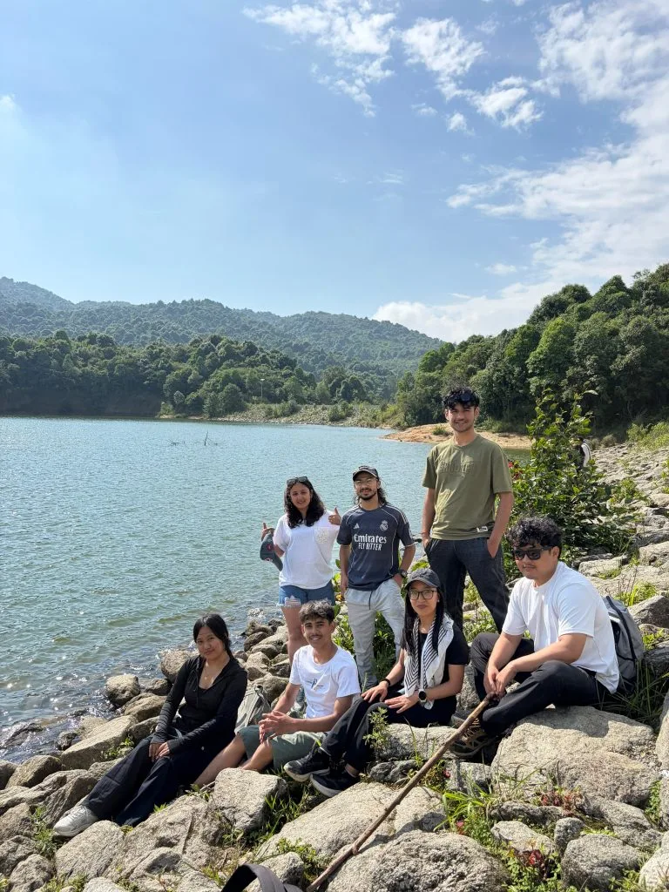
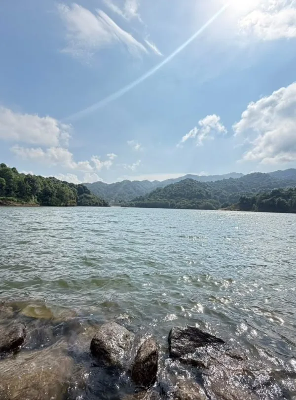
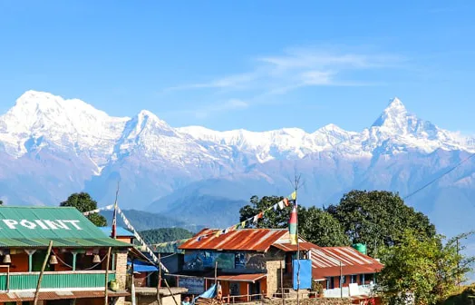

We wanted a quick, scenic trek near Kathmandu without extreme altitude risks, and the 3-day Chisapani Nagarkot circuit with Igloo Himalaya Treks was extraordinary. Walking through the oak and rhododendron forests of Shivapuri National Park up to Chisapani, followed by the panoramic sunrise over Langtang, Ganesh Himal, and Dorje Lakpa from Nagarkot, was breathtaking. Sagar Gurung was attentive, professional, and great company on the trail!
Kathmandu Valley • Guided Hill Walk
5.0
reviews on TripAdvisor
5.0
169 reviews on Google
Chisapani Nagarkot Trek — 5 Days
Walk from Sundarijal to Chisapani and Nagarkot on a five-day hiking trip near Kathmandu. You’ll climb forest paths inside Shivapuri Nagarjun National Park, pass village homes and farmland, and spend a night at each hill stop.

Travelers' Choice
Best of the Best 2026



Key Trip Facts
DURATION
5 Days
Arrival, departure & 2 full hiking days included
ACTIVITY LEVEL
Easy to Moderate
Forest paths, stone steps & rolling ridge trails
HIGHEST ALTITUDE
2,200 m / 7,218 ft
Chisapani overnight ridge stop
DESTINATION
Nepal
Kathmandu Valley hill route
ACTIVITY TYPE
Guided Ridge Hiking
Scenic rim trails & sunrise viewpoints
ACCOMMODATION
Hotels & Teahouse (4N)
2N Kathmandu, 1N Chisapani lodge, 1N Nagarkot hotel
TRANSPORTATION
Private Vehicle
Round-trip trailhead transfers & airport pickups
MEALS INCLUDED
Full Board on Trek
B, L & D on hiking days; hotel breakfasts in KTM
BEST SEASON
Spring & Autumn
March–May & October–November recommended
HIKE STARTS
Sundarijal
Trailhead entry inside national park
HIKE ENDS
Nagarkot
Sunrise viewpoint & vehicle return to KTM
TREK REGION
Kathmandu Valley Rim
Shivapuri Nagarjun National Park hills
PACKAGE START POINT
Kathmandu
Airport greeting & comprehensive briefing
PACKAGE END POINT
Kathmandu
Scheduled departure airport transfer
01 • OVERVIEW
Chisapani Nagarkot Trek Overview
Our five-day Chisapani Nagarkot Trek links two hill settlements above Kathmandu Valley, with forest walking, village paths and mountain views when the weather allows. Starting at Sundarijal, you climb inside Shivapuri Nagarjun National Park to Chisapani, then continue to Nagarkot. The programme includes two hiking days, road transfers, and your arrival and departure in Kathmandu.
After arriving in Kathmandu, meet the team and review the walking programme before setting off the following morning. A drive takes you to Sundarijal, where steps and uphill paths lead into the national park. Woodland and village areas provide different surroundings as you gain height. Chisapani is your first overnight stop outside the city, with a basic teahouse stay and possible views towards the mountains in clear weather.
The walk to Nagarkot is the longer hiking stage. Forest paths, local village tracks and farmland bring repeated climbs and descents, so allow a full day rather than treating it as a short stroll. After reaching Nagarkot, settle into your hotel. The following morning offers time for sunrise before the direct drive back to Kathmandu.
This itinerary stays at lower elevations than Nepal’s high mountain treks, but the walking still requires preparation. Expect steps, uneven ground and several hours outdoors on consecutive days. Your guide leads the route, while one porter is shared between two trekkers. Carry daily essentials yourself, including drinking water, rain protection, personal medicines and a warm layer for stops and evenings.
You spend two nights in Kathmandu, one in Chisapani and one in Nagarkot. The five-day programme includes your arrival, the walking journey, return drive and departure from Nepal.
Key Route Highlights & Destinations
Sundarijal Trailhead
Shivapuri National Park
Chisapani Ridge (2,200 m)
Jhule & Chauki Bhanjyang
Nagarkot Viewpoint (2,175 m)
Chisapani Nagarkot Trek Highlights
Walk from Sundarijal into Shivapuri Nagarjun National Park, following steps and forest paths towards Chisapani village on your first full hiking day.
Stay overnight in Chisapani, with mountain views possible when clouds clear above the surrounding wooded hills.
Follow local village paths and farmland towards Nagarkot, seeing everyday life around the hills near Kathmandu Valley.
Watch sunrise from Nagarkot, where Himalayan views depend on cloud, weather and local visibility.
Combine two hiking days with road access from Kathmandu, returning by vehicle after your Nagarkot stay.
Travel with an experienced guide and shared porter support, with hotel nights in Kathmandu and Nagarkot arranged within the programme.
LOCAL SUPPORT
Why Book the Chisapani Nagarkot Trek with Igloo Himalaya Treks?
We arrange the walking route, accommodation and connections around Kathmandu. This package brings the following services together for your trip.
Trip Briefing and Preparation
Before leaving Kathmandu, we explain the hiking programme and check your preparations. Ask about the longer Nagarkot stage, your daypack, meals, accommodation and anything you need for the walk.
Guide and Porter Support
An experienced guide accompanies the hiking route, and one porter is shared between two trekkers. Your porter carries the main trekking luggage while you carry water, weather protection and daily essentials.
Accommodation and Meals Arranged
Stay in Kathmandu and Nagarkot hotels, with a teahouse night in Chisapani between the hiking stages. The package includes trekking meals, tea or coffee with meals, and seasonal fruits with dinner.
Communication When Plans Change
Rain, trail conditions and road traffic can affect the schedule. We explain necessary changes and discuss available arrangements, including additional transport or accommodation costs when requested services fall outside your confirmed programme.
Day 1: Arrival in Kathmandu
Arrival in Kathmandu — Approximately 1,400 m / 4,593 ft — Departure day
Our representative meets you at Tribhuvan International Airport and accompanies you to your Kathmandu hotel. After settling in, review the full five-day hiking programme, check your essential equipment and discuss any questions about the route and accommodation. Depending on your arrival time, rest after your flight or explore nearby streets. Prepare a daypack for tomorrow’s walk and check the meeting time, luggage arrangements and the road transfer to Sundarijal.
Day 2: Drive to Sundarijal and Walk to Chisapani
Drive to Sundarijal and Walk to Chisapani — Chisapani, approximately 2,200 m / 7,218 ft — Approximately 1 hour from Kathmandu; traffic can affect timing
After breakfast, drive from Kathmandu to Sundarijal, the starting point of your hike. Meet the walking team, complete the park entry arrangements and begin climbing the steps towards the forest. The route gains height on steps and uneven paths inside Shivapuri Nagarjun National Park. Continue past village areas and woodland, taking breaks for lunch and water along the way. Your guide sets a pace suited to the group and conditions. Reach Chisapani for a teahouse night, with possible mountain views if the weather is clear.
Day 3: Walk from Chisapani to Nagarkot
Walk from Chisapani to Nagarkot — Nagarkot, approximately 2,175 m / 7,136 ft — Approximately 6–7 hours; allow a full hiking day
Leave Chisapani after breakfast for the walk towards Nagarkot. Follow your guide on forest paths and village tracks, keeping water and snacks accessible as the terrain rises and falls. The day combines woodland, farmland and settlements along the hills outside Kathmandu. Allow time for lunch and short breaks, with the path and walking distance depending on local conditions and the route chosen for your group. Arrive in Nagarkot and settle into your hotel. If the weather allows, enjoy the evening mountain views, then rest before an early start for tomorrow’s sunrise viewing.
Day 4: Nagarkot Sunrise and Drive to Kathmandu
Nagarkot Sunrise and Drive to Kathmandu — Approximately 1,400 m / 4,593 ft — Approximately 1–2 hours, depending on traffic and road conditions
Start early for sunrise at Nagarkot, with mountain visibility depending on the weather. After breakfast at your hotel, return to Kathmandu by private vehicle, allowing for road traffic. The return drive takes around one to two hours, depending on the road and your Kathmandu hotel location. After checking in, spend the remaining day resting, shopping or exploring nearby streets. Lunch and dinner are at your own expense.
Day 5: Departure from Kathmandu
Departure from Kathmandu — No overnight stay — Departure day
Your five-day Chisapani Nagarkot Trek ends today. After breakfast, prepare for your onward journey. Depending on your flight time, you may have an opportunity for a final walk near the hotel before your airport transfer. Our representative accompanies you to Tribhuvan International Airport for your departure.
What’s Included in the Chisapani Nagarkot Trek
Airport transfers
Private arrival pickup and departure drop-off at Kathmandu’s international airport.
Road transport
Private vehicle transfers from Kathmandu to Sundarijal and from Nagarkot back to Kathmandu, following the agreed programme.
Kathmandu accommodation
Two nights in a three-star hotel with breakfast, before and after hiking. The property and room arrangement are confirmed in your quotation before booking.
Trekking meals
Breakfast, lunch and dinner on the two hiking days, with a cup of tea or coffee at each meal and seasonal fruits served with dinner during your trek.
Hiking guide
An experienced guide accompanies the walking route and helps you follow the programme.
Park entry
The official Shivapuri Nagarjun National Park entry permit and required documents for the agreed hiking route.
Chisapani accommodation
One night in a local teahouse between the walking stages, with the room and bathroom arrangements confirmed before departure.
Nagarkot accommodation
One night in a three-star hotel, including the morning’s breakfast.
Porter support
One porter shared between two trekkers carries main luggage.
Trip briefing
A Kathmandu briefing covering the hiking programme, onward transfers and practical preparations.
What’s Not Included in the Chisapani Nagarkot Trek
International flights and Nepal visa
Your international airfares and Nepal visa charges remain separate.
Travel insurance
Your insurance policy, with cover for hiking, medical treatment and emergency transport in Nepal.
Medical expenses
Treatment, ambulance services, rescue and evacuation costs beyond the services listed in your booking.
Personal equipment
Hiking shoes, clothing, walking poles, daypack, toiletries, medicines and belongings you choose to bring for the trip.
Extra food and drinks
Snacks, desserts, alcoholic drinks and purchases beyond the included meals, seasonal fruits and tea or coffee.
Other Kathmandu meals
Lunches and dinners during your Kathmandu stays are at your expense.
Personal services
Charged showers, Wi-Fi, charging and laundry services.
Staff tips
Gratuities for your guide, porter and drivers.
Additional arrangements
Extra nights, transport upgrades, itinerary extensions and optional excursions outside the five-day programme, including any Changu Narayan visit.
Chisapani Nagarkot Trek Dates & Availability
Starting Prices
Prices are in US dollars and represent starting rates. Send your dates, group size and room preferences to confirm availability, included services and your quotation.
1 person
From USD 255
Solo Trekker
2–4 people
From USD 225
Per Person · Best Deal
5–9 people
Request a quote
Group Savings
10–20 people
Request a quote
Large Group Rate
Other group sizes
Request a quote
Custom Departure
| Number of travellers | Starting price per person | Action |
|---|---|---|
| 1 person | From USD 255 | |
| 2–4 people | From USD 225 per person | |
| 5–9 people | Request a quote | |
| 10–20 people | Request a quote | |
| Other group sizes | Request a quote |
12
SEP
Sep 12 – Sep 16, 2026
AVAILABLE$225 pp
24
SEP
Sep 24 – Sep 28, 2026
AVAILABLE$225 pp
What to Pack for the Chisapani Nagarkot Trek
Pack for uphill walking, cool hilltop evenings and changing weather over two hiking days. Keep water, snacks, rain protection, medicines and valuables in your daypack. Use a suitable main bag for belongings carried by the porter between overnight stops.
Porter and daypack planning: One porter shared between two trekkers carries main luggage.
Hiking Gear
Clothing
Sleeping and Lodge Items
Toiletries & Hygiene
Electronics
Documents & Personal Items
Keep your main bag manageable and confirm the porter’s luggage allowance before departure. Carry your passport, money, electronics and everything needed during the walk in your daypack.
Read Before You Book, Chisapani Nagarkot Trek (5 Days)
Before choosing this Chisapani Nagarkot itinerary, consider the two walking days, uphill steps, long Nagarkot stage and overnight facilities. These details help you prepare and decide whether the programme suits your expectations.
If you are still unsure if this trek is for you, then email or WhatsApp us. We will get back to you within 24 hours to answer any more questions.
Trek Difficulty and Fitness
This is an easy-to-moderate hill trek, with uphill steps on the Sundarijal approach and a longer walk to Nagarkot. The second hiking day is listed at six to seven hours. Expect uneven ground, repeated climbs and descents, rather than flat walking between the planned overnight stops. Hiking experience is helpful. First-time hikers should practise uphill and downhill walking, build endurance and become comfortable carrying a daypack on consecutive days. Prepare with regular walks and hill hikes before departure, allowing longer if you have limited walking experience. Include steps and downhill practice, wear your intended hiking shoes and gradually increase the time spent walking with your packed daypack.
Altitude and Hill Conditions
Chisapani and Nagarkot overnight stays are around two thousand metres, with Chisapani approximately 2,200 metres. Forest paths can climb above the settlements, depending on the chosen trail and conditions. This shorter hill route has lower altitude demands than Nepal’s high mountain treks, but illness and fatigue remain possible. Tell your guide if you develop headaches, nausea, dizziness or unusual tiredness. Stop and assess symptoms before continuing; seek appropriate medical help if symptoms persist or worsen.
Medical Conditions and Travel Insurance
If you have a medical condition, discuss the hiking with a healthcare professional before travel. Consider the walking hours, steps, uneven ground and medicines you need to carry. Arrange travel insurance suitable for the hiking route and planned elevations, including medical treatment and emergency transport in Nepal. Check activity exclusions, altitude limits, excess charges and the insurer’s assistance procedure. Carry your policy details and emergency contact number during the walking days.
Accommodation and Room Facilities
You stay in three-star hotels in Kathmandu and Nagarkot, with a simpler local teahouse night in Chisapani. The programme has four nights: two in Kathmandu and one at each hiking stop. Chisapani facilities are more basic than the city hotels. Room layout, bathrooms, hot water and bedding depend on the property. Discuss winter warmth, room sharing and any private-bathroom preference before booking so expectations match the confirmed accommodation.
Food and Dietary Requirements
Breakfast, lunch and dinner are included on the two hiking days, with tea or coffee at meals and seasonal fruits with dinner. Tell us about allergies or dietary requirements before booking so suitable meals can be discussed. Choices may be simpler in Chisapani; explain strict needs clearly, including concerns about shared cooking equipment.
Drinking Water
Carry reusable bottles and drink safely bottled, boiled or appropriately treated water. Untreated tap water or a clear stream may still contain germs. Boiling is the best way to kill germs. If boiling is unavailable, filtration followed by disinfection offers broader protection than many portable water filters alone. Follow the instructions for your treatment equipment or tablets.
Guide and Porter Support
An experienced guide leads the walking route, with one porter shared between two trekkers. Your porter carries main luggage; keep your daypack, water, rain protection, personal medicines and valuables with you while hiking.
Showers, Charging and Communication
Hot water, Wi-Fi and charging arrangements vary between properties, with separately charged services excluded. Mobile reception may weaken on forest paths. Charge your devices, carry a power bank and keep electronics dry. Ask permission before photographing people, and check your accommodation’s facilities before relying on them.
Permits and Documents
We arrange the Shivapuri Nagarjun National Park entry permit and required documents for the agreed route. Carry your passport or identification and keep papers available for checks. Your Nepal visa and travel documents remain your responsibility.
Road Delays and Extra Time
Traffic, roadworks and heavy rain can delay the Sundarijal transfer or Nagarkot return. Wet paths, park access and the group’s pace can affect schedules. Allow flexibility before departure. The itinerary returns to Kathmandu on Day 4 without a buffer day. Additional accommodation, transport or extensions may cost extra.
Altitude Profile of the Chisapani Nagarkot Trek (5 Days)
The itinerary begins and ends with nights in Kathmandu. Between them, you sleep in Chisapani and Nagarkot after the two hiking days. The table shows approximate overnight elevations rather than the highest point of every forest path; your trail can rise above the overnight stops.
Highest Overnight
2,200 m / 7,218 ft
Chisapani Teahouse (Day 2)
Sunrise Summit
2,175 m / 7,136 ft
Nagarkot Ridge Viewpoint (Day 3)
Valley Base
1,400 m / 4,593 ft
Kathmandu Hotel (Days 1 & 4)
Trek Schedule
2 Hiking Days
Sundarijal to Nagarkot & Changu
Elevation Progression & Acclimatisation Curve
Interactive elevation chart showing overnight points across Kathmandu, Chisapani and Nagarkot. Switch units between meters (m) and feet (ft).
Peak Lodge: 2,200 m / 7,218 ft
| Day | Overnight Stop | Approximate Altitude & Trail Details |
|---|---|---|
| 1 | Kathmandu | 1,400 m / 4,593 ft — Arrival and trek briefing in the capital |
| 2 | Chisapani | 2,200 m / 7,218 ft — Drive to Sundarijal, hike through Shivapuri National Park to hilltop teahouse |
| 3 | Nagarkot | 2,175 m / 7,136 ft — Forest ridge walking via Jhule and Chauki Bhanjyang to Nagarkot resort |
| 4 | Kathmandu | 1,400 m / 4,593 ft — Himalayan sunrise, hike to Changunarayan temple, drive to Kathmandu |
| 5 | Departure | No overnight stay — Final airport transfer |
Elevations are approximate; your selected hotel and trail affect actual heights.
Walking Stages and Viewpoints
TRAILHEAD & WATERFALLS
1,460 m / 4,790 ft
Day 2 — Sundarijal Approach
Climb steps and forest paths in the national park towards Chisapani accommodation.
Stone water flumes & Shivapuri oak-rhododendron forest
RIDGE TEAHOUSE
2,200 m / 7,218 ft
Day 2 — Chisapani Settlement
Stay around 2,200 m, with mountain views possible when cloud and visibility allow.
Views of Langtang, Ganesh Himal & Dorje Lakpa
FOREST RIDGEWAY
2,175 m / 7,136 ft
Day 3 — Nagarkot Approach
Follow the longer hill route, allowing for climbs and descents between settlements.
Scenic village ridgeways through Jhule & Chauki Bhanjyang
HIMALAYAN PANORAMA
2,175 m / 7,136 ft
Day 4 — Nagarkot Sunrise
View the mountains if conditions allow before driving back to Kathmandu.
Expansive sunrise vistas spanning 8 Himalayan ranges
These overnight stays form a hill journey without an acclimatisation day. Your guide follows the trail and adjusts the pace to the group and conditions.
Weather and Best Time for the Chisapani Nagarkot Trek (5 Days)
Spring, from March to May, and autumn, particularly October and November, generally suit this hill walk. They offer opportunities for mountain views and comfortable walking conditions. Cloud can still hide the peaks, while winter cold and monsoon rain call for different clothing and preparation.
Clear Panoramas
Autumn (Oct–Nov)
12°C to 20°C • High Mountain Visibility & Crisp Air
Forest Blossom
Spring (Mar–May)
14°C to 22°C • Blooming Shivapuri Woodlands & Mild Trails
Quiet Ridges
Winter (Dec–Feb)
0°C to 14°C • Frosty Chisapani Mornings & Sharp Views
Mist & Greens
Monsoon (Jun–Aug)
18°C to 25°C • Verdant Forests, Waterfalls & Rains
Interactive Temperature & Climate Visualizer
Explore daily walking temperatures along the Shivapuri ridge and monthly Kathmandu Valley averages. Toggle between Celsius (°C) and Fahrenheit (°F).
| Season | Months | What to Expect |
|---|---|---|
| Spring | March–May | Days become warmer, with flowers in suitable woodland. Early mornings and evenings can still feel cool. Later spring may bring cloud or thunderstorms, so carry rain protection and allow for changing visibility. |
| Autumn | September–November | Early September can retain monsoon rain. October and November often offer better opportunities for mountain views, with colder mornings and evenings later in the season. Clear weather is not guaranteed. |
| Winter | December–February | Expect cold mornings, evenings and overnight rooms, particularly in Chisapani. Clear views are possible, but fog or cloud can reduce visibility. Check for frost or slippery ground before an early walk. |
| Monsoon | June–September | Rain can make steps and earth paths wet or muddy. Leeches may occur on damp forest trails, and cloud can hide mountain views. Check trail access and road conditions before departure. |
These are seasonal patterns; conditions can vary from year to year and during an individual trek.
ELEVATION & RIDGETOP EXPOSURE
How Weather Changes Along the Route
Kathmandu, Chisapani and Nagarkot can feel different on the same trip. Forest walking may feel cooler than open paths, while the hilltop stops become colder around sunrise and after sunset. Pack a warm layer for the evening and viewpoint visit, even when daytime walking feels comfortable. Rain makes steps and paths slippery, and cloud can remove mountain views. Carry weather protection and let conditions guide your pace and plans.
Windproof fleece & headlamp recommended for early sunrise departures
ROUTE PLANNING RECOMMENDATION
Which Season Should You Choose?
Choose spring for warmer walking days and flowering woodland where conditions allow. Consider October or November if mountain visibility is your interest. Winter needs warmer clothing, while monsoon trips require preparation for wet paths and flexibility over the hiking schedule.
Short 5-day format runs comfortably across all four seasons
Chisapani Nagarkot Trek Reviews
4.9 / 5
(128+ Reviews)
Over 15,000 adventure seekers have explored the Himalayas with Igloo Himalaya Treks. Hear verified feedback from trekkers who completed the classic 3-day Shivapuri National Park, Chisapani ridgetop, and Nagarkot panoramic rim trek.

25 October

18 October

14 October

22 October


5-Day Chisapani Nagarkot Trek FAQs
Find clear answers to common questions about walking fitness, beginner suitability, teahouse stays, sunrise mountain views, and Changu Narayan walks.
Route & Walking
No. The package lasts five days including arrival and departure in Kathmandu. You hike on Days 2 and 3, sleep in Chisapani and Nagarkot, then drive back to Kathmandu on Day 4 before your departure the following day.
It may suit first-time hikers who prepare for steps and several hours of walking. The Nagarkot stage is longer, listed at six to seven hours. Practise walks with a daypack and discuss your fitness before booking.
No. Mountain views depend on cloud, weather and visibility. The itinerary allows a sunrise opportunity from Nagarkot before the return drive, but clear views cannot be promised. Bring warm clothing for the early morning viewpoint visit.
You spend two nights in a three-star Kathmandu hotel, one in a Chisapani teahouse and one in a three-star Nagarkot hotel. Your quotation confirms properties and room arrangements. Chisapani facilities are simpler, so discuss bathroom preferences and bedding beforehand.
No. This five-day itinerary returns from Nagarkot to Kathmandu by vehicle after breakfast. A Changu Narayan excursion is outside the agreed programme and would need separate discussion, time and a confirmed quotation before being added.
Yes. One porter is shared between two trekkers and carries the main trekking luggage. You carry a daypack with water, rain protection, medicines and valuables. Confirm the luggage allowance and main-bag arrangements before leaving Kathmandu.
The hiking days include breakfast, lunch and dinner, with tea or coffee at meals and seasonal fruits with dinner. Kathmandu hotel breakfasts and the Nagarkot breakfast before returning are included. Other Kathmandu lunches and dinners cost extra.
Yes. The solo starting rate is USD 255. For two to four travellers, rates start from USD 225 per person. Send your dates and room preferences so we can check availability and confirm your quotation.
Yes. The route enters Shivapuri Nagarjun National Park, and its permit is included in the package. We arrange the required documents for the agreed walk. Carry identification for checks and follow the guide’s instructions and park visitor rules.
Chisapani is approximately 2,200 metres, making it the higher overnight stop in this programme. Nagarkot is around 2,175 metres. These are settlement heights; the walking trail can climb higher before descending to the accommodation chosen for your stay.
Suitability depends on walking ability, health and comfort with steps and uneven ground. Share children’s ages and mobility or medical needs before booking. The longer Nagarkot stage needs assessment; the package length does not remove its demands.
Ask about conditions for your dates. Winter brings colder mornings and evenings, while monsoon rain can make paths slippery and hide mountain views. The guide assesses the trail and access before proceeding; changes and any costs need to be agreed.
MORE KATHMANDU & NEPAL OPTIONS
You Might Also Like
If you prefer a day hike, cultural sightseeing or a longer village trek, consider these other Igloo packages around Nepal.
 1 Day
1 Day
Jamacho Hike
Walk to Jamacho Gumba on a guided day hike in Nagarjun forest. This outing offers forest walking and a viewpoint without the Chisapani and Nagarkot overnight stays. Check its walking demands and arrangements before booking.
 4 Days
4 Days
Kathmandu Heritage Tour
Explore cultural and religious places around Kathmandu Valley on a sightseeing programme. Choose this option if temples, stupas and historic town centres interest you more than consecutive hiking days between hill settlements.

8 DaysPanchase Trek
Explore the hills above Pokhara on a village and forest walking route to Panchase. This longer programme includes additional travel and different overnight stops. Compare its itinerary and walking stages with the shorter Chisapani Nagarkot journey before choosing.
 10 Days
10 Days
Tamang Heritage Trail
Follow a village circuit from Syabrubesi in the Langtang region, visiting Tamang communities along local walking trails. This longer cultural trek requires more travel and walking days. Review its route and preparation needs before choosing your itinerary.
Enquire about your preferred package for current prices and availability.